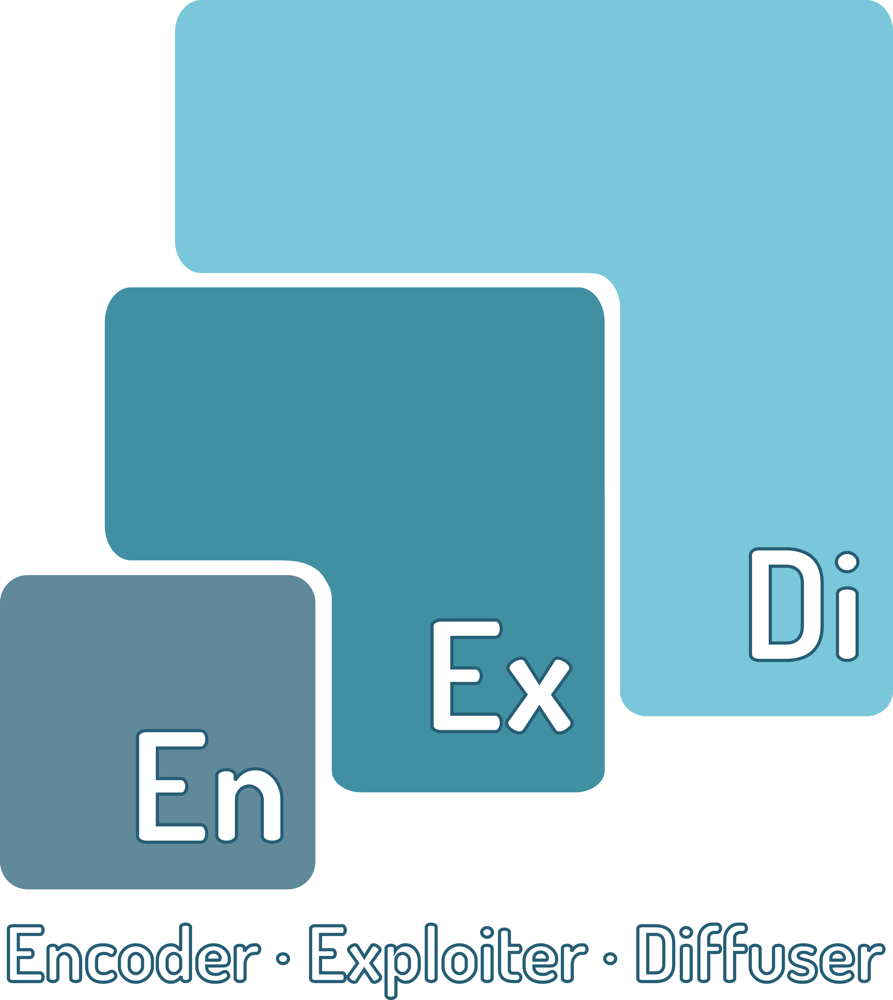

Upcoming events.
Apèro EnExDi 2021
The COVID-19 pandemic put a stop to our annual EnExDi Winter School
As it could not be moved online, we decided to turn the school into a seminar series instead: we asked our former students to present their EnExDi research projects in the form of short, practical talks or "aperitifs" to both showcase their work and promote future editions of our school!
Some talks will be delivered in French and others in English.
Important information - please read!
- Audience. These seminars are targeted at Digital Humanities newcomers.
- Registration. Each seminar requires separate registration! To register for a seminar, please click on the corresponding registration button. Registered participants will receive the Zoom link and passcode needed to join the chosen seminars.
- Twitter. You can follow the seminars on Twitter using the #enexdi2021 hashtag.
Online Digital Mapping Tools for the Not-so-digital Humanist
{kind=link}
While a solid background in informatics is certainly a valuable asset when approaching digital mapping, nowadays numerous tools are available online that allow to craft a perfectly adequate map even with no previous knowledge on the subject and very little training. As an example, I will briefly discuss my basic but (hopefully) serviceable WiP digital map of the complete works of a single author, and the problems I have encountered in developing it – which for the most part are more methodological than technical. Subsequently, I will present Storymap, a free online service especially suited for creating cartographic presentations, which is extremely intuitive even for absolute beginners.
Alessio Aletta
Alessio Aletta (1992) is a Ph.D. Candidate in Italian Studies at the University of Toronto, Canada. His research interests include Italian Modernist Literature, Literary Geography and Comics Studies; his articles appeared in journals such as Pirandello Studies, Nuova Corrente, Between. His doctoral project examines the geography of Luigi Pirandello’s literary works; only recently it occurred to him that he needed to know something about Digital Mapping to actually undertake this project, so he started learning about it in the CAD Aipi Summer School in Verona in 2019.
- Free Registration
You will receive an automatically generated confirmation email with a link to the Zoom room and passcode - please make sure you also check your spam folder!
Mapping Renaissance Education in Verona within the Digital Humanities
- Date: To be announced
- Location: Zoom
- Language: English
- Speaker: Francesca Masiero
The workshop presents the digital mapping of Latin and abacus schools and teachers in Verona in the Early Renaissance and presents an open source app that allows researchers to upload documents related to their projects. This app enables users to link illustrations, comments, translations and marginal annotations to their materials digitally to highlight the main features and outcomes of their research. By analysing a few manuscripts related to fifteenth-century schooling in Verona, this app shows how to create exempla of materials taken from researchers' projects and present the results of their research to the general public via a digital tool designed to make academic findings accessible to broader, non-specialist audiences.
Francesca Masiero
I am a LAHP-funded PhD student in Renaissance Studies at the School of European Languages, Culture and Society at University College London. I graduated at King's College London in Modern Foreign Languages (MA) and at Ca' Foscari University, Venice in European and American Languages and Literature (MA, BA). I also spent a year at the Centre for the Study of the Renaissance, University of Warwick (Erasmus for Research). My research interests include Renaissance Pedagogy, Early Modern Philology, Latin Palaeography and Digital Humanities. I am the lead coordinator of the ‘Digital Editing and the Medieval Manuscript Fragment’ project organised by UCL Special Collections and Yale University and a member of the editorial board of the DH journal Bembus within the 'Humanities for Change' project (VeDPH).
- Free Registration
You will receive an automatically generated confirmation email with a link to the Zoom room and passcode - please make sure you also check your spam folder!
Previous seminars
La cartographie numérique au service des humanités
- Date: 22 February 2021, 17:00-18:30 CET
- Location: Zoom
- Language: French
- Speakers: Helen Rawsthorne & Nathan Godet
- Flyer: [4,1 MB]
{kind=link}
Dans cet atelier, nous aimerions proposer une courte introduction au monde de la cartographie numérique et du SIG. Nous présenterons l'outil carto.com, qui permet facilement de créer des cartes interactives et diffusables sur l'internet. Le seul impératif est de disposer de données qui peuvent être localisées. Ces données, une fois géoréférencées, c'est-à-dire liées à des coordonnées de latitude et de longitude, peuvent alors être mises en scène au sein d'une production cartographique. La carte ainsi créée permet d'accéder à une nouvelle échelle d'analyse de vos données. Après avoir parcouru les principales fonctionnalités de carto.com, nous aimerions présenter un second outil, MapWarper.net, qui permet de géoréférencer des images, telles que des anciennes cartes, afin de pouvoir visualiser vos données sur un nouveau support. Une comparaison est alors possible entre vos propres données et celles figurant sur la carte ancienne.
Helen Rawsthorne
Après avoir décroché une Licence de physique à l'Université de Bristol, Helen Mair Rawsthorne a obtenu un Master en Histoire culturelle des sciences et des techniques, Humanités numériques et Médiation à l'Université de Bretagne Occidentale. Dans le cadre de ses deux sujets de recherches, en M1 et en M2, elle a pu mettre à profit certains outils en humanités numériques. Dans le cadre de son mémoire de M1 portant sur les machines à prévoir les marées, Helen a analysé le cycle de vie de l'ensemble de ces artefacts. Au cours de son M2, elle a utilisé des compétences en cartographie numérique dans l'étude des résultats d'une campagne hydrographique dans le golfe de Gascogne au XVIIIème siècle. Aujourd'hui, Helen est doctorante en contrat avec l'IGN et le Shom et travaille sur la construction d'une base de connaissances topographiques côtiers mobilisables pour produire automatiquement des instructions nautiques.
Nathan Godet
Après avoir décroché une Licence d'histoire à l'Université de Poitiers, Nathan Godet a obtenu un Master en Histoire moderne et contemporaine. Au cours du M1, il a proposé une transcription du journal de bord d'un équipage de flibustiers français à la toute fin du XVIIème siècle. Son mémoire de M2 a été réalisé à la suite d'un stage proposé par le Shom où il s'agissait de mettre en lumière les liens entre le service hydrographique français et l'expansion coloniale de la France de 1830 à 1920. Aujourd'hui, Nathan est doctorant de l'Université de Poitiers en contrat avec le Shom et travaille sur trois siècles d'histoire des idées et pratiques en sciences et technologies de la mer (1720-2020) : du Dépôt des cartes et plans au Service hydrographique et océanographique de la marine.
- Registration Closed
You will receive an automatically generated confirmation email with a link to the Zoom room and passcode - please make sure you also check your spam folder!
L’analyse des collections d’artistes grâce à Gephi
- Date: 1 March 2021, 17:00-18:30 CET
- Location: Zoom
- Language: French
- Speaker: Gwendoline Corthier-Hardoin
- Flyer: [5,1 MB]
{kind=link}
Cette communication est consacrée à l’analyse de réseaux à partir des données récoltées dans le cadre de ma thèse sur les artistes collectionneurs. Ces données correspondent aux œuvres collectionnées par plus de deux cents individus nés entre 1830 et 1980. Elles représentent environ 17000 pièces de plus de 5600 artistes. L’objectif de cette recherche repose sur les principales questions suivantes : Qui collectionne ? Qui est collectionné ? Quels réseaux peuvent être mis en lumière ? Pour révéler les liens qui unissent les artistes entre eux à partir des œuvres qu’ils collectionnent, nous utilisons le logiciel Gephi. Il permet non seulement de relier des individus les uns aux autres, mais également de détecter des communautés. Plusieurs études de cas seront présentées : 1) le réseau des impressionnistes à partir de l’analyse des transactions – dons, échanges, achats – qu’ils ont réalisées entre 1870 et 1900 2) une visualisation des artistes les plus collectionnés par leurs confrères entre 1870 et aujourd’hui 3) une analyse de réseau appliquée à une cartographique présentant les transactions effectuées par les artistes de l’École de Nice à partir des années 1970. Ces trois exemples permettront d’illustrer les différentes manières d’utiliser le logiciel Gephi en histoire de l’art, mais également de mettre en exergue ses limites.
Gwendoline Corthier-Hardoin
Gwendoline Corthier-Hardoin est chercheuse à l’École normale supérieure de Paris et à l’université Paul-Valéry Montpellier 3. Elle mène un doctorat sur les artistes collectionneurs et l’étude de la constitution de leurs collections de la seconde moitié du XIXe siècle à aujourd’hui. En parallèle de ses recherches, elle est en charge du pôle de recherche sur les collections au MO.CO. (Montpellier Contemporain) dont l’objectif est d’étudier les collections publiques et privées contemporaines.
- Registration Closed
You will receive an automatically generated confirmation email with a link to the Zoom room and passcode - please make sure you also check your spam folder!
Projet eBalzac : construire une bibliothèque hypertextuelle des sources intellectuelles
- Date: 3 March 2021, 17:00-18:30 CET
- Location: Zoom
- Language: French
- Speaker: Karolina Suchecka
- Flyer: [4,7 MB]
{kind=link}
La partie théorique de notre intervention sera consacré à la présentation des résultats du projet ANR Phœbus-eBalzac à partir de sa première réalisation, le site www.ebalzac.com, et d’un développement encore inédit portant sur une cartographie hypertextuelle de l’univers intellectuel de Balzac, construite à partir de la détection automatique des réutilisations textuelles. La partie pratique nous permettra d’expérimenter certains outils mis à disposition des chercheurs, comme le moteur de recherche dans l’œuvre balzacienne, et d’introduire quelques notions de base permettant d’exploiter le potentiel des expressions régulières.
Karolina Suchecka
Karolina Suchecka est doctorante en littérature comparée à l’Université de Lille. Dans son projet de thèse, elle exploite les outils informatiques pour étudier l’intertextualité et la représenter au sein d’une édition numérique comparative des réécritures du mythe d’Orphée et Eurydice. Engagée dans le projet eBalzac depuis 2017, elle prend en charge les développements de l’informatique éditoriale.
- Registration Closed
You will receive an automatically generated confirmation email with a link to the Zoom room and passcode - please make sure you also check your spam folder!
Comparing digital tools: PhiloEditor and EVT
- Date: 19 April 2021, 17:00-18:30 CET
- Location: Zoom
- Language: English
- Speakers: Ersilia Russo & Serena Crespi
- Flyer: [5,6 MB]
{kind=link}
In the digital environment, texts that have several authorial editions or are preserved by multiple witnesses can be represented in many ways using different softwares and tools, which require the user to have the appropriate skills. In this apèro we will show and compare the usability of two digital tools, EVT and PhiloEditor, analysing the differences between them having the first chapter of Manzoni’s Promessi Sposi as our case study.
Ersilia Russo
Ersilia Russo is a PhD student at the University of Florence. Her research project explores the diachronic evolution of the phraseology of Alessandro Manzoni’s novel through a historical-linguistic perspective. She applied computational stylometric methods when collaborating to the project Psychostylometry at the Huygens Institute. She is part of the PhiloEditor team, developing a digital application that automatically displays the variants of texts with multiple editions.
Serena Crespi
Serena Carlamaria Crespi is a PhD student at the University of Florence, in co-tutorship with the CESR of Tours, with a research project aiming to create a database of seventeenth century italian manuscripts. Winner of a research grant, in 2018 she published two digital editions using EVT and she took part in the international project FonteGaia managed by the University of Grenoble Alpes. In october 2020 she joined the editorial board of Aldus2.0, an online journal which deals with philological and digital topics.
- Registration Closed
You will receive an automatically generated confirmation email with a link to the Zoom room and passcode - please make sure you also check your spam folder!
The public storytelling of the Covid-19 pandemic. A comparison of four European cases
- Date: 26 April 2021, 17:00-18:30 CET
- Location: Zoom
- Language: English
- Speaker: Nemola Zecca
- Flyer: [6.3 MB]
{kind=link}
This contribution aims at reconstructing the public storytelling of the Covid-19, through the analysis of some articles published on the subject in some of the most popular European newspapers. Specifically, we will review the articles that appeared in March and April 2020 in the digital editions of the following periodicals: El Pais (Spain), Daily Mail (Great Britain), Le Monde (France), La Repubblica (Italy). After reconstructing the narrative framework that accompanied the first and hardest phases of the pandemic in Europe, the Treetagger software will be used to proceed to linguistic labelling and lemmatization of the texts. It will be demonstrated how Treetagger makes it possible to extract complex terms, identify lexical hierarchies, but also reduce the number of queries, thus opening up new research questions from the chronological analysis of texts.
Nemola Zecca
Nemola Chiara Zecca, born in 1994, graduated from the University of Salento (Italy) in 2018 with a degree in Modern Literature, and then graduated from the Higher University Institute of Interdisciplinary Training (ISUFI, Lecce) in September 2019. In her studies, she has privileged Women's History, contributing to the reconstruction of the process of female self-awareness in writing and reading. Her interests led her to Dijon, where she spent a semester studying, and to the Ecole française de Rome. She is currently in the second year of her PhD in Langue, Littérature et Civilisation Italiennes at the Centre de la Méditerranée Moderne et Contemporaine of the Université Côte d'Azur. Her research investigates degeneration and homosexuality in the military Italian world in the first two decades of the 20th century.
- Registration Closed
You will receive an automatically generated confirmation email with a link to the Zoom room and passcode - please make sure you also check your spam folder!